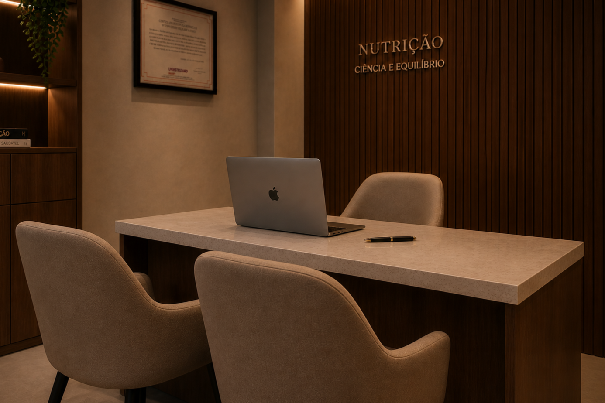

Nutricionista · Saúde Feminina
Nutrição com ciência,
escuta e estratégia.
Atendimento nutricional personalizado para mulheres que desejam emagrecer, melhorar sintomas e cuidar da saúde hormonal com clareza e acompanhamento.
Como funciona o atendimento
Investigação profunda
Analiso sua história, exames laboratoriais e sinais clínicos para entender seu ponto de partida real.
Plano personalizado
Nada de cardápios genéricos. O plano é construído de acordo com sua rotina, preferências e necessidades.
Acompanhamento contínuo
Você recebe suporte para ajustes, evolução e constância ao longo de todo o processo. Incluindo bioimpedância.
Pra quem é o meu acompanhamento?
Saúde da mulher e equilíbrio hormonal
TPM, SOP, menopausa e sintomas hormonais.
Emagrecimento e gestão metabólica
Perda de peso com estratégia, sem terrorismo nutricional.
Saúde digestiva e imunidade
Inchaço, intestino irregular e desconfortos digestivos.
Longevidade e vitalidade
Preservação de massa muscular, energia e autonomia ao longo dos anos.
Planos disponíveis
Escolha o nível do seu comprometimento
- Avaliação completa (histórico, hábitos e bioimpedância)
- Plano alimentar individualizado entregue em até 48h
- Acesso ao aplicativo e materiais exclusivos
- Retorno em até 30 dias
- 3 meses de acompanhamento completo
- Consultas mensais com reavaliação e ajustes no plano
- Suporte entre consultas via WhatsApp
- Plano alimentar atualizado conforme evolução
- Acesso ilimitado ao aplicativo e materiais exclusivos
Quem será a nutri a te acompanhar?
Sou Ana Fedel, nutricionista, e meu trabalho é olhar para você de forma completa: sua história, seus exames, seus sintomas, sua rotina e seus objetivos.
Aqui, a nutrição não é sobre restrição, culpa ou dietas prontas. É sobre entender o que o seu corpo está tentando comunicar e construir um plano possível, inteligente e sustentável.
Nutrição baseada em ciência e prática clínica.
Meu atendimento é fundamentado em evidências, análise clínica e interpretação de exames laboratoriais. Cada estratégia é pensada com precisão para gerar resultados reais e sustentáveis.
Cuidar da saúde também pode ser leve.
Sem culpa, sem extremos e sem rigidez. Aqui, você aprende a entender seu corpo e construir um caminho possível para sua rotina.

Pronta para cuidar do seu corpo
com mais consciência?
Agende sua consulta e receba um acompanhamento pensado para você, sua rotina e seus objetivos.